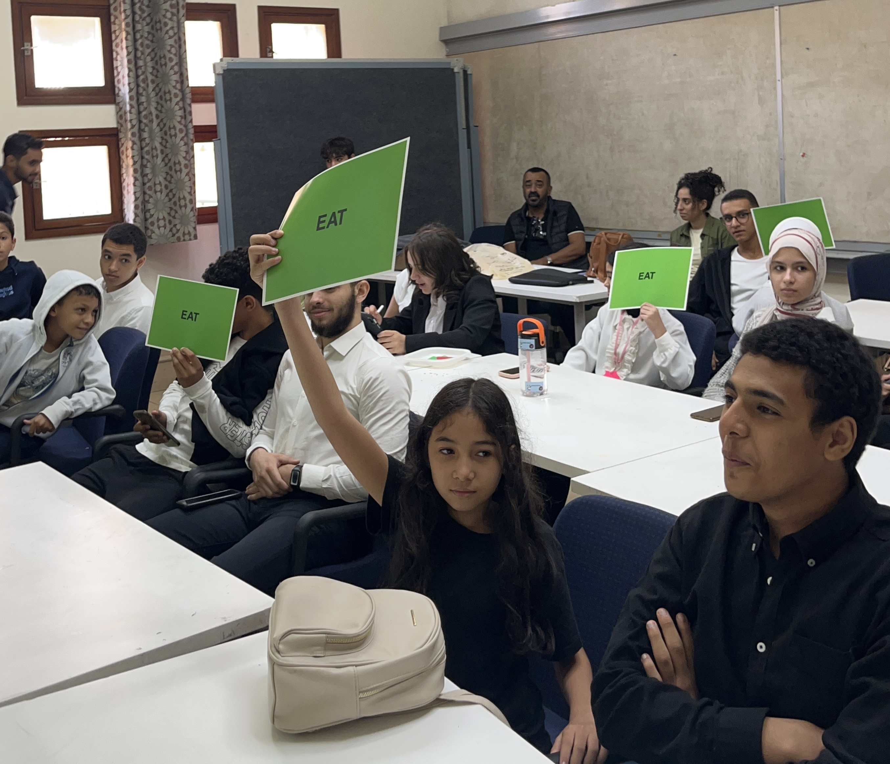
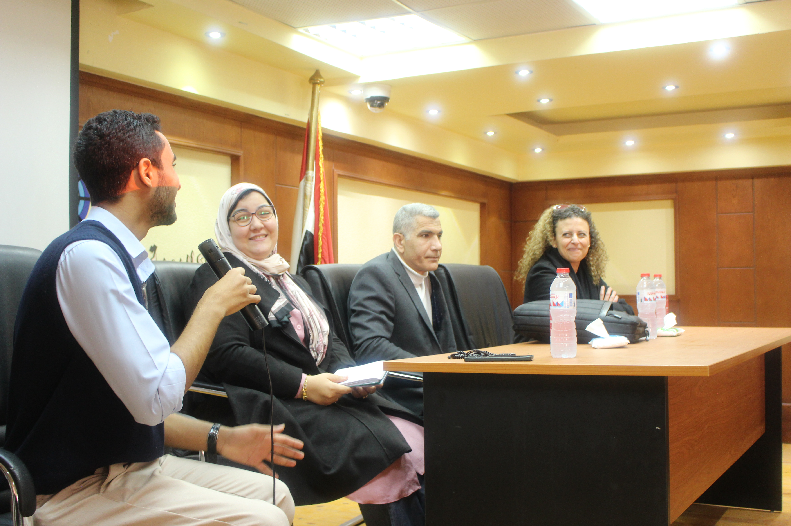
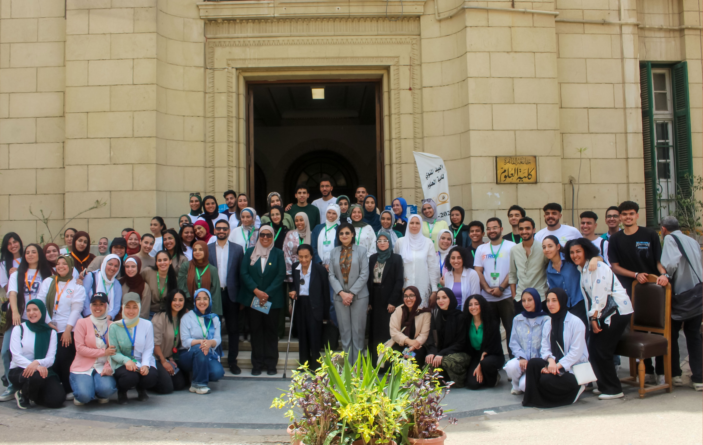
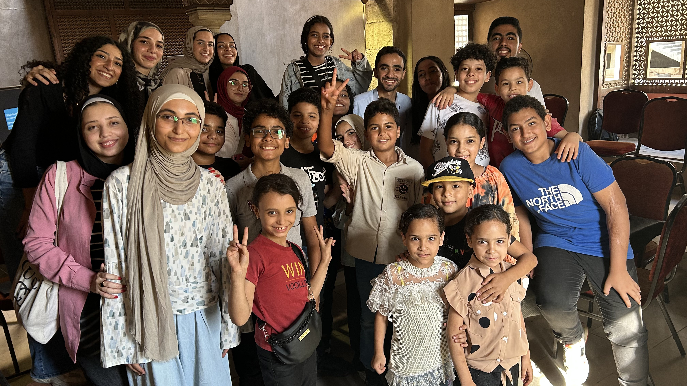
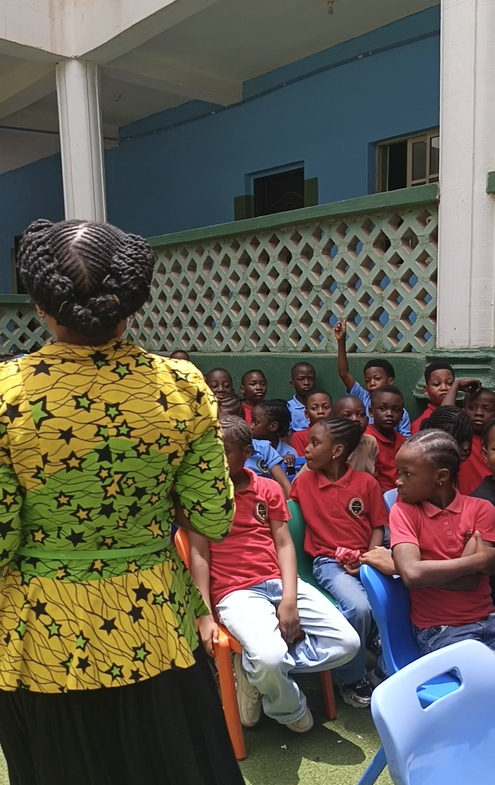

From research to real classrooms.
Every initiative below started with a question about how food waste actually works — and ended with a program we could measure.
World Urban Forum for Children

Selected as a Community Partner among more than 2,500 NGOs, we designed and led interactive workshops exploring how food waste connects to the cities children grow up in. Using pre- and post-session assessments, we measured what participants actually learned — not just how engaged they were.
Zero Food Waste

A one-day, multi-generational event hosted at the Academy of Scientific Research and Technology, built around three parallel tracks — one each for children, teenagers, and adults. Every group tackled food waste through lessons suited to their stage of life, from foundational awareness to household-level responsibility. A home-agriculture session and an expert panel on ecology and nutrition rounded out the day.
Waste Management & Sustainable Development

In partnership with Cairo University and its Green Office, we brought informational talks and interactive booths to students and faculty — unpacking how food waste connects to the wider food system and sharing practical ways to cut waste on campus and at home.
Egyptian Urban Forum

A multi-day program for children combining storytelling, AI-generated videos, interactive games, and hands-on activities — designed to show how food waste shapes the cities we live in. Hosted with the Ministry of Culture, the Ministry of Higher Education and Scientific Research, and ASRT.
Beyond The Bin
Three days of youth research training for 76 students aged 13 to 17, in partnership with Cairo University and Greenish and funded by the European Union. Teams chose a food waste challenge, researched it, and presented a written brief.
Food Waste Education for Sustainable Schools

One curriculum, delivered by local partners and adapted to each classroom. Our first live pilot in Abuja reached 65+ pupils over four weeks.